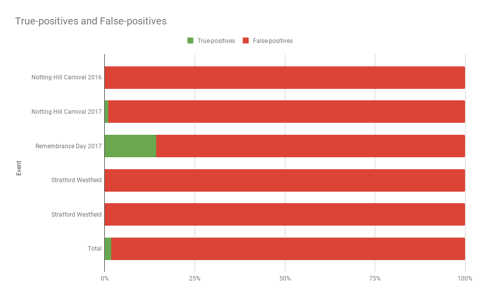

If you were walking around London’s West End last Christmas, chances are you were, unknowingly, part of a Metropolitan Police trial of its facial recognition software.
But even if you weren’t, it’s nearly impossible to leave your house without being recorded by a CCTV camera. A study published in the pages of CCTV Image Magazine estimated the number of private and publicly operated cameras in the United Kingdom to be around 1.85 million in 2011.
This amounts to about one camera for every 32 people. It also means that each person is seen, on average, by 70 cameras a day. The numbers have undoubtedly grown since 2011 as more businesses and local governments installed security cameras.
What’s the purpose of CCTV?
Most of the CCTV cameras installed around London are owned by private businesses.
However, the London Borough of Islington operates 156 public surveillance cameras. According to Islington Council website, the cameras are “used to tackle crime and anti-social behaviour”.
"Our control room is open 24 hours a day 365 days a year and is in constant two-way radio contact with the police. It can direct emergency services and our own ASB [anti-social behaviour] officers to incidents as well as record evidence for the police and council services to use in their investigations." - Islington Council
Transport for London is another big operator of CCTV cameras. These “jamcams” are used to protect property, investigate incidents, prevent and detect crime and monitor traffic.
Some of these cameras have publically accessible feeds that you can watch.
OpenStreetMap volunteers have mapped some of the private CCTV cameras in Islington and Camden.
Knowing the total number of cameras in any given area is nearly impossible, as businesses aren't required to register their use of CCTV with any authorities. Even some local authorities refuse to disclose the locations of the cameras they operate due to security concerns. Scraping the Camden Council website only returns 41 camera locations. The Camden press service did not respond to an email about their CCTV system.
What are they watching?
Both Conservative and Labour administrations have supported the proliferation of surveillance cameras by making funding available for local areas. The government spent hundreds of millions of pounds without there being established research on its effectiveness. Later research provided conflicting results. Some types of crimes, such as illegal parking, significantly went down in areas observed by CCTV cameras. Violent crimes, however, seemed to not be affected.
Heatmap of crimes in Islington and Camden in 2018 and locations of CCTV cameras.The map above shows the locations of CCTV cameras operated by Islington Council, Camden Council and TfL. The heatmap displays the locations of reported crimes in Islington and Camden throughout 2018. Zoom in to explore.
Does it work?
A 2009 report from the Metropolitan Police admitted that for every 1,000 CCTV cameras, only one crime is solved every year. That crime will cost around £20,000 to detect.
Face recognition doesn't seem to be improving matters. Data obtained by Big Brother Watch through FOIA request shows that face recognition largely fails. It also raises questions about the police archiving photos of innocent people without the person's knowledge.
 Percentage of true and false-positives in police face recognition trials.One question remains. If it doesn't deter crime, what's the purpose of CCTV?
Website built with Bootstrap. Theme by Star Bootstrap.
Data from Islington Council, Camden Council, TfL, OSM, police & Big Brother Watch. Header image by Rohan G.